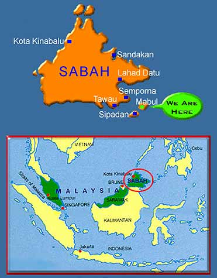
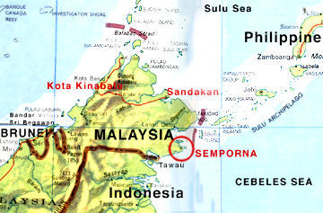
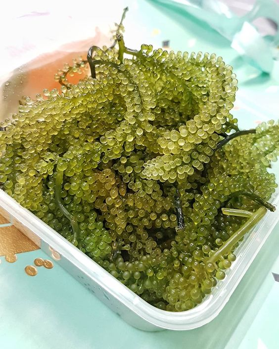
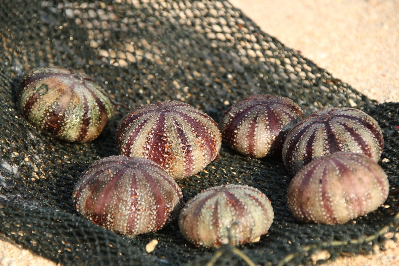
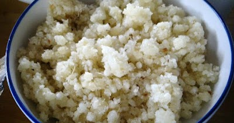
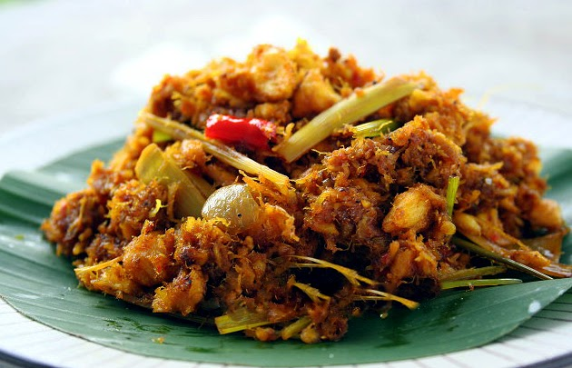

INTRODUCTION OF MABUL ISLANDGeography and Place of Mabul IslandMabul Island is said to be one of the greatest macro-photography locations in the world. This island which is located in the clear waters of the Sulawesi Sea not far from the coast of Sabah is surrounded by coral reefs that slope to a depth of 2 to 40 meters. This 21 -hectare island is larger than Sipadan Island and is home to the sea gypsies who are one of the indigenous ethnic groups in Sabah. By speedboat Mabul Island is located only about 15 minutes from Sipadan Island. Mabul is a small oval-shaped island filled with tall palm trees, soft white sand and surrounded by the greenish blue waters of the Sulawesi Sea. Visitors can walk around Mabul Island which takes about half an hour only. There are Bajau villages around the island of Mabul and at the same time provide an overview of their traditional lifestyle. There are a variety of exotic life in the scuba area such as octopus, cephalopods, prawns, crabs, and seaweeds. |
|---|
INTRODUCTION OF SEMPORNA, SABAHGeography and Place of SempornaSemporna is located at the tip of Semporna Peninsula around Lahad Datu Bay (also known as Darvel Bay), and is visited by tourists as a base for scuba diving or snorkelling trips to Pulau Sipadan (Sipadan Island), some 36 kilometres southeast of town. Semporna is a large district and town in Sabah. Semporna is also an island but not many people are aware of it. Semporna Island is surrounded by many islands that attract local and foreign tourists. Among the interesting islands in Semporna are Mabul Island, Sipadan Island, Bohey Dulang Island, Kapalai Island, Mataking Island, and Pom Pom Island. There are also islands in Semporna that are interesting to visit although it is still less popular such as Timba Timba Island, Bodgaya Island, Sibuan Island, and Bum Bum Island. The capital of the Semporna District in the Tawau Division of Sabah, Malaysia, is Semporna (Malay: Pekan Semporna). In 2010, the population was expected to be approximately 35,301 people. Famous Traditional Food1) LATOK Known as the sea grape, it will be eaten raw. Fresh food from the sea tastes a little salty, it will often be eaten with pepper and lemon. This latok is very good to eat because it is full of nutrients. 2) TEHE-TEHE Tehe-tehe is a type of seafood that is famous among the Bajau of the East Coast of Sabah. It is very nutritious and good for health.The filling The teas are softer and have a slight sweet taste, always cooked with the rice that is stuffed into it and becomes a very tasty rice "Oko-Oko". 3) AGGANG Made from sweet potatoes, in the past rice and rice were not used as staple foods. Delicious to eat with seafood. Always prepared by cooking for a while before serving. 4) SAGOL Among the traditional food available in Semporna Sabah. is also one of the traditional foods of the Bajau people. In the Bajau language which means mixed or mixed up.Made using several types of fish such as sharks, puffer fish, stingrays and others. |